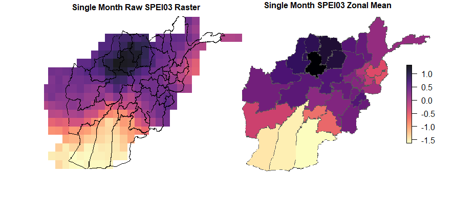
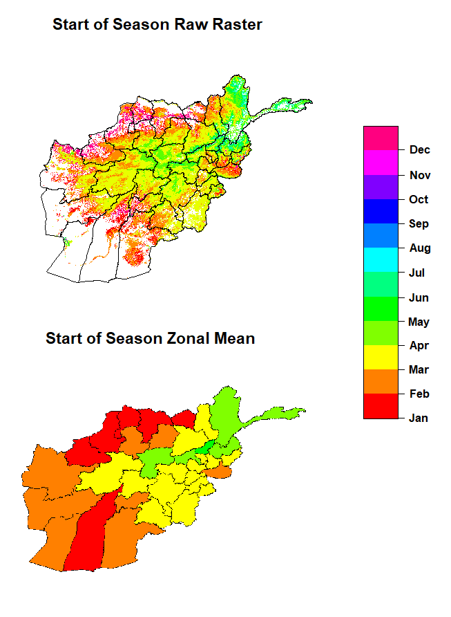
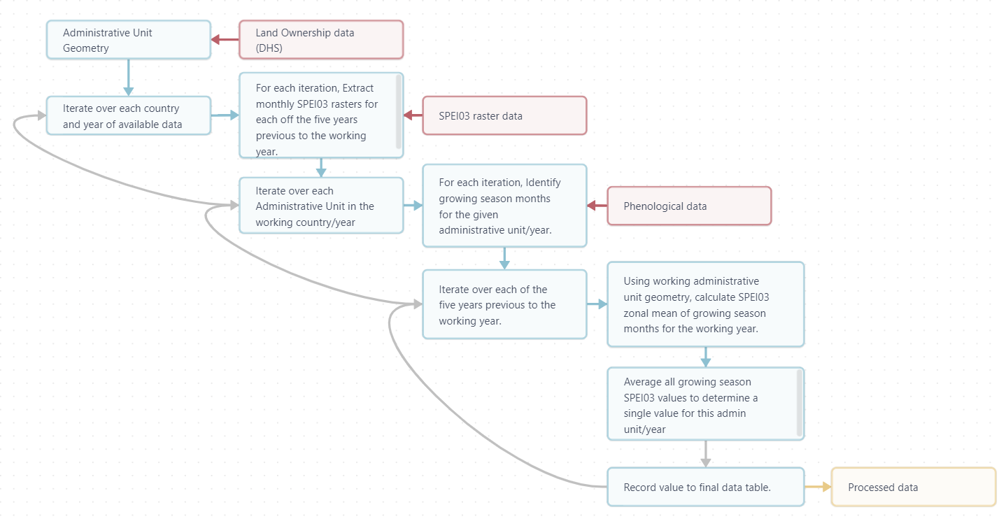

The impacts of rainfall on land ownership: A Bayesian approach
Note: This is a small description of my Master’s thesis work, currently submitted for publication with “Population and Environment”. That manuscript can be provided upon request. The code used for this analysis is available on github.
The adverse effects of climate change are likely to harm food supplies and agricultural livelihoods worldwide. Faced with challenges resulting from increasingly unpredictable weather patterns, some farmers might be forced abandon their occupation. A dramatic increase in landless population could result in increased levels of social and political conflict. After analyzing agriculture and precipitation data from a large number of countries worldwide, we found that drier than average growing season weather is associated with declining landownership rates. For every consecutive dry growing season before a land ownership survey, the agricultural land ownership rate of the affected reigon falls by 2.51%. This article is an attempt to describe the process behind that analysis.
The Data
Any model is only as good as the data it uses. For this project, we there were several key variables we needed to know. These are as follows:
A large, multi-year, multi-country sample of land-ownership data, hopefully at a sub-national resolution.
An exogenous way to measure environmental stress during the growing season, anywhere in the world
The first requirement was resolved quite nicely, thanks to the Demographic and Health Survey (DHS). The DHS is a data collection program administered in many countries around the world, with most questions interested in healthcare access and outcomes. Lucky for us, some of the surveys included a question regarding land ownership. Also, these surveys are statistically representative at a sub-national resolution, and can be accessed for free as a shapefile through a user-friendly geospatial data portal. Perfect! Well, almost perfect. The survey is not offered in every country, or every year, so there is a lot of temporal and spatial variety that we need to control for.
The second requirement was quite a bit more challenging. We decided to use the standardized precipitation index, or SPEI, to measure environmental stress. Using the SPEI allows for easy comparison between countries at different times and places because it is recorded as a standard deviation above or below the mean for that location. SPEI is calculated using varying temporal windows, generally in terms of months. The most basic form of SPEI would probably be the 12-month SPEI, or SPEI12. A SPEI12 for any given location at any given time would describe how the year of precipitation previous to that given time compared to all other years in the dataset, recorded as a standard deviation above or below the mean. A negative value would imply a dry year, while a positive value would imply a wet year. But, that doesn’t mean we can just grab the SPEI data for the years of our DHS survey and call it a day. If we look only at environmental stress during the year of a DHS survey, we don’t learn anything because the economic effects of that growing season might not be felt until later years. Instead, we want to look at the years preceding a survey. The number of years we look at is arbitrary, but we settled on five. This also allows us to see what happens when multiple years of drought occur within our five-year windows.

A second issue is that if we use a 12 month SPEI, we would be capturing an entire years-worth of weather events, and we are only interested in weather events occurring during or near the growing season for each unit. So instead of a 12-month SPEI, or SPEI12, we can use a 3-month SPEI or SPEI3. Now, for any given date, we can compare the previous three months of precipitation to those same three months in the rest of the dataset. But this presents another issue. Growing seasons can vary dramatically both between and within countries. We need to know the exact growing season for each administrative unit in our study, in the year of each DHS survey. This might sound tricky, but lucky for us, that dataset already exists! Anomaly Hotspotsof Agricultural Production, or ASAP, is a dataset commissioned by the European Union Joint Research Center to help warn of agricultural anomalies worldwide. They provide phenological growing season data as part of that dataset. So, we took that phenological growing season data from each year (provided as a raster) and used zonal statistics to find the average start and end months for each of our administrative units.

Now that we have our land ownership data as well as our rainfall data sorted out, it was time for data processing. For each administrative unit (during any given year), we completed the following steps to find the mean growing season SPEI03 for each of the five years previous to that administrative unit’s survey year. (The actual R code for this process can be viewed on my GitHub page.)
- We identify the five years previous to the working unit’s survey year.
- We identify and extract the SPEI03 data corresponding to the growing season months of each of those five years.
- For each year, we convert those months of data into rasters and calculate a zonal mean of each using the geometry of the administrative unit.
- We average each of those values together to calculate one SPEI03 value for that year.

The final result of this process is a dataset of sub-national agricultural landownership data covering 50 countries on five continents between 2004 and 2017, with the five preceding years of growing season precipitation data for each admin unit. Pretty impressive!
Modeling
The goal of our analysis was to model the impact of repeated years of below-average rainfall on levels of levels of land ownership in the affected regions. To do this we operationalize our SPEI03 values three different ways, resulting in three different models. As mentioned above, the SPEI is recorded as a standard deviation above or below the mean. The first approach is to take average SPEI03 values of the five years previous to the survey year and and model those SD values directly. The second and third approaches involve selecting a threshold to represent drought conditions, and then calculating the total number of the five years preceding a DHS survey in a given administrative unit that meet that threshold. This count of years beyond a given SPEI threshold is the actual measurement included in the model. We use a SPEI threshold of -0.5 to represent moderate drought conditions, and a threshold of -1 to represent severe drought conditions. This approach allows us to account for the elasticity of agricultural economics, where singular severe years can be offset by subsequent or antecedent productive years.
We model these interaction linearly using a bayesian approach to spatial modeling, all performed using the tools included in the R-INLA library.